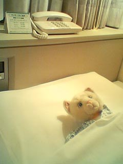

|
■2004/01/27/(Tue)22:50
大阪帰り
|

こんばんは。
もう今年に入って６回飛行機に乗っているワタクシです。
なんかこー…最近やたら疲れるし寒いなーと思っていたら
体重が３キロ以上落ちてました。
毎年冬は１キロぐらい太るので、たぶん実質５キロ近く落ちている感じかと。
というわけでもりもり食べてます。今。
５５１の豚饅美味しいわー。関東進出しないかなー「５５１」。
物心ついたころから、健康診断の結果は「やせすぎ」。
小学校の頃は体質改善施設「下田学園」のお誘いにおののいておりました。そーいや、小学校の時すでに「胃下垂」の診断が下っていたなぁ…
というわけで、こんな時間からもう一個豚饅食べます。
関東の皆様、大阪行ったら５５１の豚饅ですよ。
|
|
|